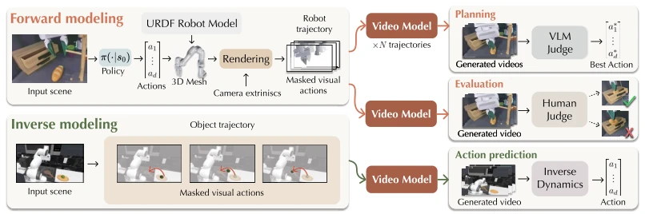
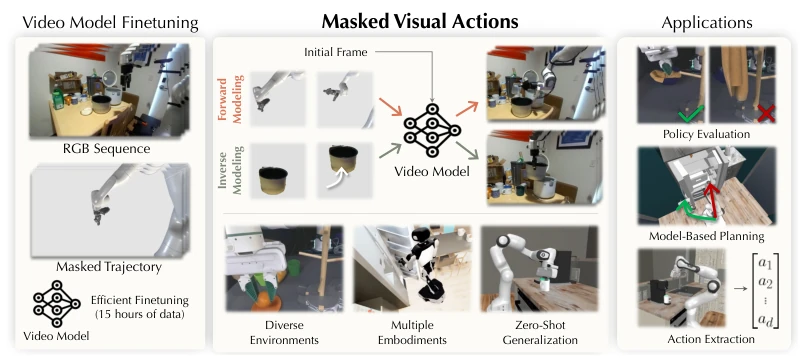
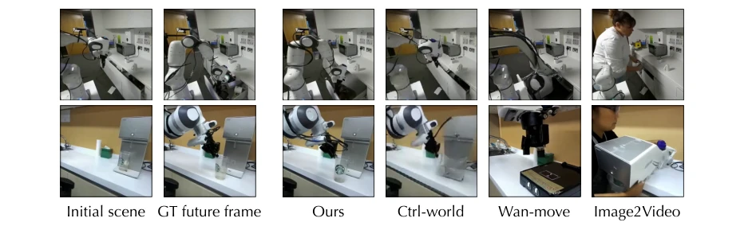
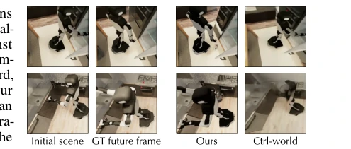
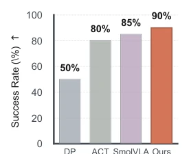
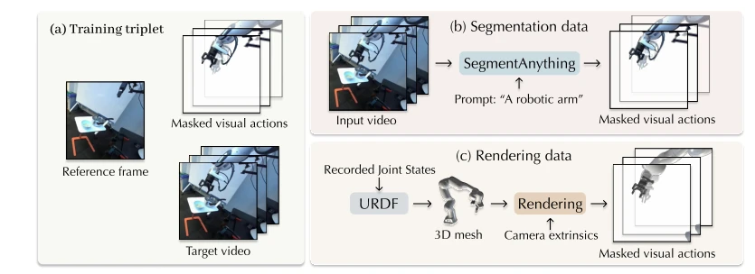
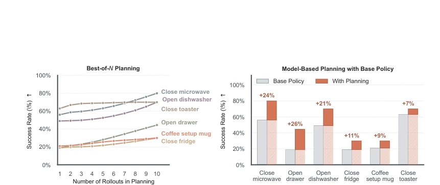
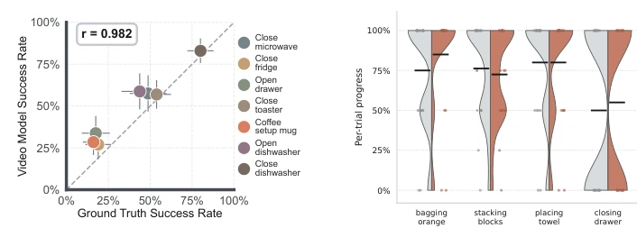

Hadi Alzayer, Wenlong Huang, Haonan Chen, Christopher Luey, Lvmin Zhang, Maneesh Agrawala abspdf
论文点评Review
这篇论文试图用视频生成模型当机器人模拟器，思路挺野。把动作变成像素级的遮挡轨迹，既当正向动力学又当逆向动力学，一个模型通吃。15 小时数据微调就能在未见过的机器人本体上泛化，这点确实比 Ctrl-World 强。但别高兴太早，生成模型本质是学相关性，不是物理因果，幻觉问题依然存在。而且逆向动作提取还得靠额外的 inverse dynamics model，说“视频模型直接当策略”有点偷换概念。虽然号称 unified，但实际推理时还是得区分 forward/inverse 条件，不算完全黑盒。不过作为 World Model 的接口设计，确实比低维向量更直观，算是给视频模型加了个“具身接口”。
This paper attempts to use video generation models as robot simulators; the idea is quite bold. It transforms actions into pixel-level occlusion trajectories, serving as both forward and inverse dynamics, with one model covering all. Fine-tuning with only 15 hours of data allows generalization to unseen robot embodiments; this point is indeed stronger than Ctrl-World. But do not celebrate too early; generative models essentially learn correlations, not physical causality, and hallucination issues persist. Moreover, inverse action extraction still relies on an additional inverse dynamics model, claiming "video models directly act as policies" is somewhat equivocal. Although claimed to be unified, forward/inverse conditions still need to be distinguished during actual inference, so it is not a complete black box. However, as an interface design for the World Model, it is indeed more intuitive than low-dimensional vectors, counting as adding an "embodied interface" to video models.
Video models have powerful visual priors, but how to feed "actions" to them is a difficult problem. Existing methods either use text [53, 63], or low-dimensional joint angles [19, 25] or skeletons [66]. These signals are sparse and misaligned with the video model's pixel space, leading to poor generalization; change the robot embodiment and it collapses. For example, Ctrl-World [25] works within the training domain but fails when switching to unseen embodiments. Like BridgeV2W [10], although it uses masks, it only trains forward and cannot perform inverse. The authors aim to solve how to make video models understand "actions" while maintaining cross-embodiment generalization. The core pain point is the disconnection between action representation and visual space, causing the model to fail to truly simulate physical interaction.

Figure 3: Applications. The masked visual actions allow using the video model as a forward model, conditioned on robot actions, or as an inverse model that predicts the robot motion that satisfies the object trajectory. The forward model can be used for planning and choosing the best trajectory sampled from a policy, or policy evaluation. On the other hand, the inverse modeling can be combined with an inverse dynamics model to estimate robot actions from the generated video.
The overall process is fine-tuning a pre-trained video model (Wan-Fun-Control 2.2 14B). The core innovation is Masked Visual Actions, encoding actions as occlusion trajectories in pixel space. Training data comes from DROID and Robocasa, construction methods are divided into two: one is using SegmentAnything [6] to segment robot arms to generate masks; the second is using URDF to render robot states to generate masks. During inference, different functions are achieved by changing mask positions: mask robot actions, model predicts scene response (Forward); mask object motion, model predicts robot actions (Inverse). Missing areas are filled with gray background, using concat as conditioning. Fine-tuning uses LoRA, rank 256, only 15 hours of data. This design allows the model to not distinguish architectures, switching roles only through conditioning, achieving unified world modeling.

Figure 1: Masked Visual Actions. We finetune a video model to condition on masked trajectories of robots, representing robot actions as pixel-space masked motions. Efficiently finetuned on only 15 hours of data, a single checkpoint of the model can act as an action-conditioned forward model to simulate robotic interactions with diverse and unseen embodiments. By conditioning it on object motion, it can also act as an inverse model that synthesizes the robot motion needed to achieve the desired outcome. We showcase the efficacy of our model for policy evaluation, model-based-planning, and action extraction where the video model acts as a policy.

Figure 6: Comparing baselines on DROID. Using image-to-video [63] or even trajectory conditioned video generation [13] with GT tracks fails to execute the robot motion or preserve the input scene. On the other hand, our model can competitively match and outperform models that take the raw robot actions [25] while maintaining generalization.
Tested on DROID and BEHAVIOR datasets. Baselines include Ctrl-World [25], Wan-move [13], Image-to-video [63]. Metrics look at LPIPS, SSIM, PSNR. In results, this method significantly outperforms Ctrl-World on unseen dual-arm robots (BEHAVIOR), the latter collapses directly. In planning tasks, using video model to simulate rollout to select best trajectory, success rate improves. In policy evaluation, correlation between simulated success rate and real success rate reaches as high as 0.982. Inverse action extraction reaches 90% success rate on COFFEESERVEMUG task, better than Diffusion Policy, etc. Ablation experiments show sparse signals (e.g., skeletons) perform poorly on unseen embodiments, proving the necessity of pixel-level masks. LPIPS drops from 0.362 to 0.0945, visual fidelity improvement is significant.

Figure 5: Generalization to unseen embodiment. While using the raw action state such as in Ctrl- world [25] can work well within the training domain, it collapses on unseen embodiments. However, our method can generalize well to unseen embodiments.

Figure 11: Action extraction. Even without task-specific video-model training, inverse modeling recovers competitive robot behavior.
其他图片Other Figures

Figure 4: Dataset construction. (a) to train our model, we need a reference frame of the initial scene, and the masked visual actions, and train it to reproduce a realistic video of the robot executing the input actions. (b) We use segmentation-based approach by segmenting the robot arm from robotics datasets as the masked visual actions. (c) However, to allow the user to provide arbitrary action trajectory at inference, the model needs to also accept simulated mesh visualization of those actions. As a result, we also include rendering-based dataset. Given that DROID also contains the robot state at each timestep, we render the robot URDF that matches the original video to construct masked visual actions.

Figure 8: Application on Planning. By rolling out multiple trajectories from a pretrained diffusion policy, we can evaluate each trajectory by simulating the actions with the video model, and then using a VLM judge to pick the best action trajectory. We observe consistent improvement in task success when using the video model to roll out and choose best action sequences, as well as the positive correlation with the number of samples evaluated at test time. This demonstrates the ability of the model to simulate counterfactuals given the same initial condition.

Figure 10: Real world policy evaluation. Rolling out real-world demonstrations with our video model produces videos with success progress closely aligned with what is observed in the real world execution.